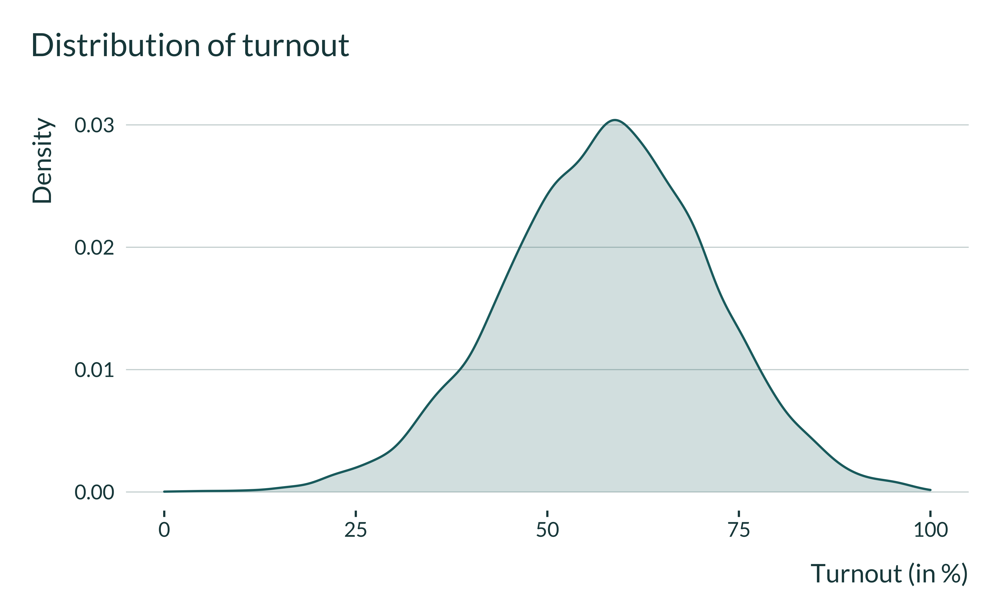
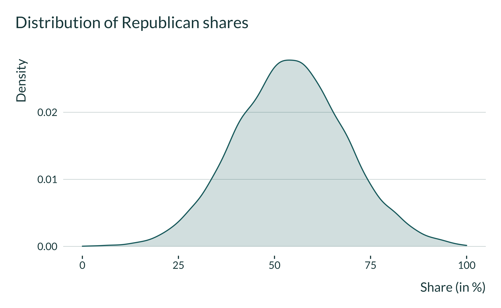
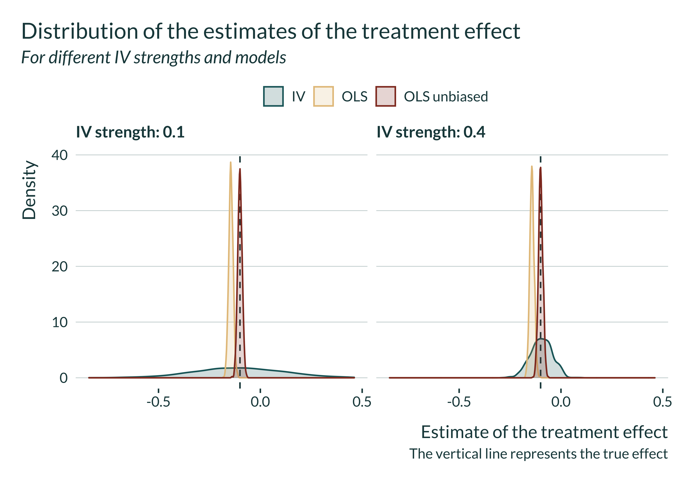
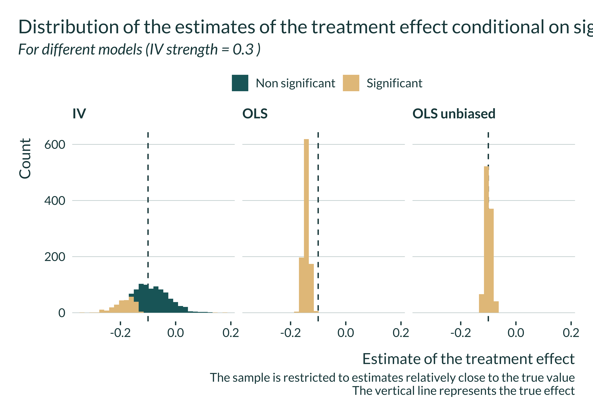
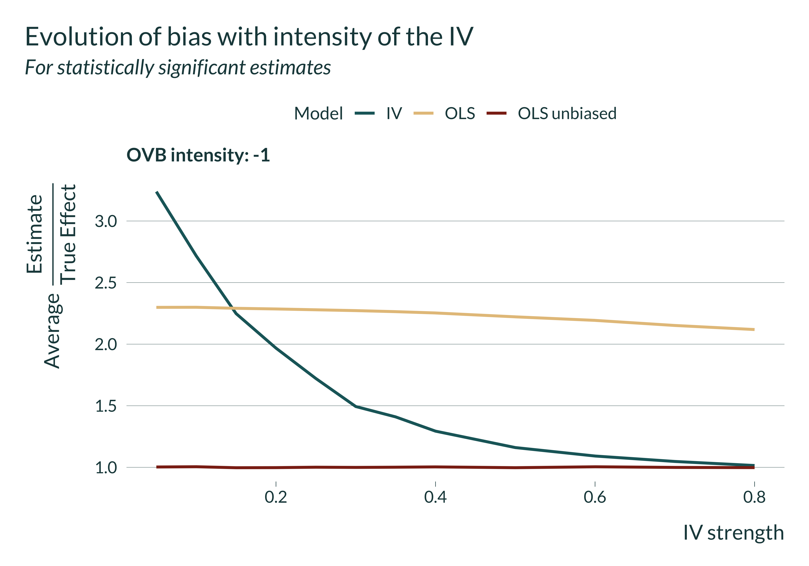
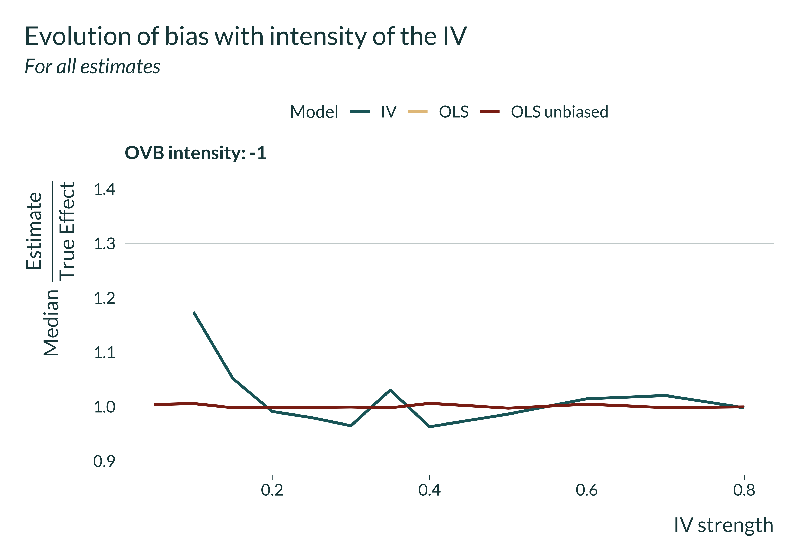
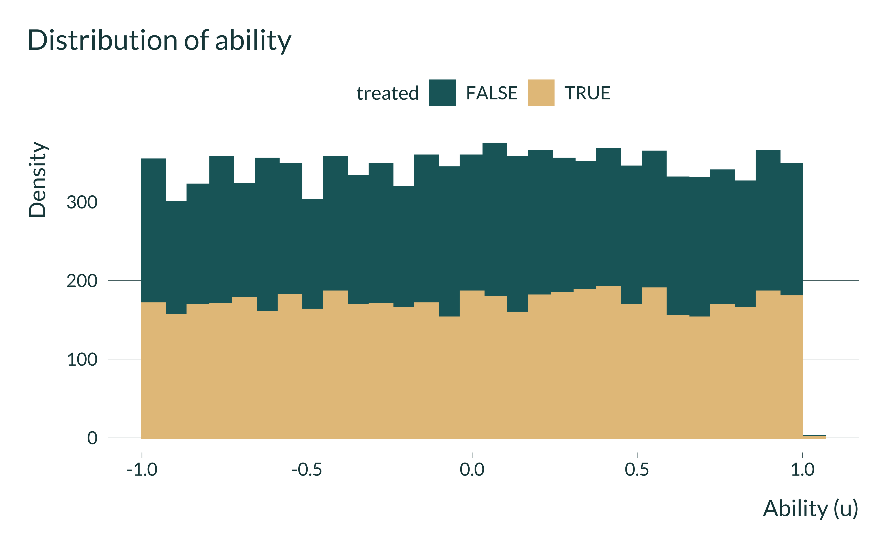
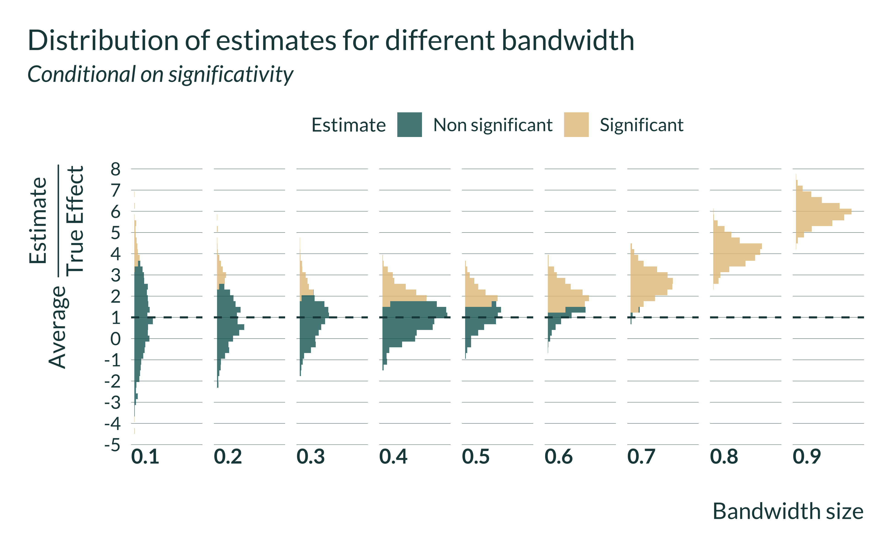

Summary and intuition
In the case of the IV, the OVB/type M trade-off is mediated by the ‘strength’ of the instrument considered.
An illustrative example
For readability and to illustrate this loss in power, we consider an example setting. For this illustration we could consider a large variety of distribution parameter for the variables. We narrow this down to an example setting, considering an analysis of the impact of voter turnout on election results, instrumenting voter turnout with rainfall on the day of the election. Our point should stand in more general settings and the choice of values is mostly for illustration.
A threat of confounders often arises when analyzing the link between voter turnout and election results. To estimate such an effect causally, one can consider exogeneous shocks to voter turnout such as rainfall. Some potential exclusion restriction problems have been highlighted in this instance but we abstract from them and simulate no exclusion restriction violations here.
Modelisation choices
For simplicity, we consider several assumptions. These assumptions is not representative of the existing literature but the objective is only to calibrate our simulation with somehow realistic parameter values. Again, this illustration is very simplistic. The high level assumptions are: - We abstract from the panel dimension in this analysis and consider only one time period. This is could be considered as looking at the outcomes of a unique election. - We only consider the impact of rain on the day of the election. - We assume no correlation in rainfall between locations. This could be equivalent to considering only a set of remote locations. - We assume simplify the data generating process and thus do not add any exclusion restriction violations.
The DGP can be represented using the following Directed Acyclic Graph (DAG):

The DGP for the vote share of let’s say the left party in location \(i\), \(Share_i\), is defined as follows:
\[Share_{i} = \alpha + \beta Turnout_{i} + \delta u_{i} + e^{(S)}_{i}\]
Where \(\alpha\) is a constant, \(u\) represents an unobserved variable and \(e^{(S)} \sim \mathcal{N}(0, \sigma_{e_S})\) noise. \(\beta\) is the parameter of interest. We call it ‘treatment effect’.
The DGP for the turnout data is as follows:
\[Turnout_{i} = \gamma + \lambda Rain_{i} + \eta u_{i} + e^{(T)}_{i}\]
Where \(\mu\) is a constant, \(Rain\) is either a continuous variable (amount of rain in location \(i\) on the day of the election) or a dummy variable (whether it rained or not) and \(e^{(T)} \sim \mathcal{N}(0, \sigma_{e_T})\) noise. We refer to \(\lambda\) as “IV strength”.
The impact on voter turnout on election outcome (share of the left party) is estimated using 2 Stages Least Squares.
More precisely, we set:
- \(N\) the number of observations
- \(Rain \sim \mathcal{N}(0, \sigma_{R}^{2})\) or \(Rain \sim \text{Bernoulli}(p_R)\) the instrument
- \(u \sim \mathcal{N}(0, \sigma_{u}^{2})\) the unobserved variable
- \(e^{(S)} \sim \mathcal{N}(0, \sigma_{e_S}^{2})\)
- \(e^{(T)} \sim \mathcal{N}(0, \sigma_{e_T}^{2})\)
If one abstract from the name of the variable, they can notice that this setting is actually very general.
Data generation
We write a simple function that generates the data. It takes as input the values of the different parameters and returns a data frame containing all the variables for this analysis.
Note that the parameter type_rain describes whether \(Rain\) is a random sample from a normal or bernoulli distribution. It can take the values normal or bernoulli. param_rain represents either \(\sigma_R\) if \(Rain\) is normal or \(p_R\) if it is Bernoulli.
generate_data_IV <- function(N,
type_rain, #"normal" or "bernoulli"
param_rain,
sigma_u,
sigma_es,
sigma_et,
alpha,
gamma,
treatment_effect,
iv_strength,
ovb_intensity
) {
if (type_rain == "bernoulli") {
rain_gen <- rbernoulli(N, param_rain)
} else if (type_rain == "normal") {
rain_gen <- rnorm(N, 0, param_rain)
} else {
stop("type_rain must be either 'bernoulli' or 'normal'")
}
data <- tibble(id = 1:N) %>%
mutate(
rain = rain_gen,
u = rnorm(nrow(.), 0, sigma_u),
e_s = rnorm(nrow(.), 0, sigma_es),
e_t = rnorm(nrow(.), 0, sigma_et),
turnout = gamma + iv_strength*rain + ovb_intensity*u + e_t,
share = alpha + treatment_effect*turnout + ovb_intensity*u + e_s
)
return(data)
}
We set baseline values for the parameters to emulate a somehow realistic observational study. We add the parameter value for delta separately as we will vary the value later and will reuse the vector baseline_parameters_IV.
We get “inspiration” for the values of parameters from Fujiwara et al. and Cooperman who replicates a work by Gomez et al..
We consider that: - turnout and vote share are expressed in percent - Fujiwara et al. find that “The trends specifications suggest that 1 millimeter of rainfall decreases turnout by 0.05–0.07 percentage points” and Gomez et al. (and thus Cooperman) find “a county that receives one inch of rainfall on election day is likely to have approximately 1 percentage point lower voter turnout” which is equivalent to a 1mm increase in rainfall is associated with about a 0.04 percentage points decrease in voter turnout. - For simplicity in interpretation, when rainfall is not a dummy, it is expressed in centimeters. So, we will consider iv_strength in the range -0.1 and -1 - We set the standard deviation of the omitted variable bias to be of the order of magnitude of the treatment effect - We calibrate the distribution parameters to fit a mix if information from table 1 from both Fujiwara et al. and Cooperman (converting the rainfall into centimeters): - The parameters of the distribution of rainfall are comparable in both papers - We set the intercepts and standard deviations of the errors to produce turnouts and vote shares consistent with the papers
We thus consider the following parameters:
simple_parameters_IV <- tibble(
N = 500,
type_rain = "bernoulli",
param_rain = 0.3,
sigma_u = 0.5,
sigma_es = 1,
sigma_et = 1,
alpha = 0,
gamma = 58,
treatment_effect = -1
)
Here is an example of data created with our data generating process:
| id | rain | u | e_s | e_t | turnout | share |
|---|---|---|---|---|---|---|
| 1 | FALSE | 0.4249975 | 0.6086449 | 1.2259967 | 59.39600 | -58.61735 |
| 2 | FALSE | -1.2548450 | 0.0828901 | -0.7076029 | 56.79046 | -57.20951 |
| 3 | FALSE | 0.1798613 | -0.7690986 | 1.2612999 | 59.33324 | -60.03040 |
| 4 | FALSE | 0.3077865 | 0.1983435 | 1.9785855 | 60.10170 | -59.78024 |
| 5 | TRUE | 0.4491355 | -0.5443693 | 0.7099674 | 59.08962 | -59.45434 |
| 6 | FALSE | 0.3973806 | -0.0020210 | -1.6587649 | 56.50019 | -56.34326 |
| 7 | TRUE | -0.0332611 | -1.8336245 | 0.1706555 | 58.35735 | -60.20428 |
| 8 | FALSE | -0.0839857 | -0.9257180 | 0.2858383 | 58.25224 | -59.21156 |
| 9 | TRUE | 0.2006285 | -0.9382267 | -0.0275321 | 58.25272 | -59.11069 |
| 10 | FALSE | 0.2091200 | -0.2154140 | -2.4111406 | 55.67251 | -55.80427 |
Exploring the distribution of the data
We just quickly explore the distribution of the data for a baseline set of parameters

Estimation
After generating the data, we can run an estimation. We want to compare the IV and the OLS for different IV strength values. Hence, we need to estimate both an IV and an OLS and return both set of outcomes of interest.
estimate_IV <- function(data) {
reg_IV <- ivreg(
data = data,
formula = share ~ turnout | rain
)
fstat_IV <- summary(
reg_IV,
diagnostics = TRUE
)$diagnostics["Weak instruments", "statistic"]
reg_IV <- reg_IV %>%
broom::tidy() %>%
mutate(
model = "IV",
fstat = fstat_IV
)
reg_OLS <- lm(
data = data,
formula = share ~ turnout
) %>%
broom::tidy() %>%
mutate(
model = "OLS",
fstat = NA
)
reg_OLS_unbiased <- lm(
data = data,
formula = share ~ turnout + u
) %>%
broom::tidy() %>%
mutate(
model = "OLS unbiased",
fstat = NA
)
reg <- reg_IV %>%
rbind(reg_OLS) %>%
rbind(reg_OLS_unbiased) %>%
filter(term == "turnout") %>%
rename(p_value = p.value, se = std.error) %>%
select(estimate, p_value, se, fstat, model) %>%
return(reg)
}
One simulation
We can now run a simulation, combining generate_data_IV and estimate_IV. To do so we create the function compute_sim_IV. This simple function takes as input the various parameters. It returns a table with the estimate of the treatment, its p-value and standard error, the F-statistic for the IV, the true effect, the IV strength and the intensity of the OVB considered (ovb_intensity). Note for now, that we do not store the values of the other parameters for simplicity because we consider them fixed over the study.
compute_sim_IV <- function(N,
type_rain,
param_rain,
sigma_u,
sigma_es,
sigma_et,
alpha,
gamma,
treatment_effect,
iv_strength,
ovb_intensity) {
generate_data_IV(
N = N,
type_rain = type_rain,
sigma_u = sigma_u,
param_rain = param_rain,
sigma_es = sigma_es,
sigma_et = sigma_et,
alpha = alpha,
gamma = gamma,
treatment_effect = treatment_effect,
iv_strength = iv_strength,
ovb_intensity = ovb_intensity
) %>%
estimate_IV() %>%
mutate(
iv_strength = iv_strength,
ovb_intensity = ovb_intensity,
true_effect = treatment_effect
)
}
All simulations
We will run the simulations for different sets of parameters by mapping our compute_sim_IV function on each set of parameters. We thus create a table with all the values of the parameters we want to test param_IV. Note that in this table each set of parameters appears n_iter times as we want to run the analysis \(n_{iter}\) times for each set of parameters.
baseline_parameters <- tibble(
N = 500,
type_rain = "normal",
param_rain = 1,
sigma_u = 1,
sigma_es = 1,
sigma_et = 1,
alpha = 0,
gamma = 0,
treatment_effect = 1
)
fixed_parameters <- baseline_parameters #%>% rbind(...)
vect_iv_strength <- c(seq(0.05, 0.4, 0.05), seq(0.4, 0.6, 0.1))
# vect_iv_strength <- c(0.1)
vect_ovb_intensity <- c(0.4)
n_iter <- 1
param_IV <- fixed_parameters %>%
crossing(vect_iv_strength, vect_ovb_intensity) %>%
rename(iv_strength = vect_iv_strength, ovb_intensity = vect_ovb_intensity) %>%
crossing(rep_id = 1:n_iter) %>%
select(-rep_id)
We then run the simulations by mapping our compute_sim_IV function on param_IV.
Analysis of the results
Quick exploration
First, we quickly explore the results.

We notice that the OLS is always biased and that the IV is never biased. However, for limited IV strengths, the distribution of the estimates flattens. The smaller the IV strength, the most like it is to get an estimate away from the true value, even though the expected value remains equal to the true effect size.
Computing bias and type M
We want to compare \(\mathbb{E}[\beta_0 - \widehat{\beta_{i}}]\) and \(\mathbb{E}[|\beta_0 - \widehat{\beta_{IV}}||signif]\). The first term represents the bias and the second term represents the type M error. This terms depend on the effect size. To enable comparison across simulation and getting terms independent of effect sizes, we also compute the average of the ratios between the estimate and the true effect, conditional on significance.
summarise_simulations <- function(data) {
data %>%
mutate(significant = (p_value <= 0.05)) %>%
group_by(ovb_intensity, iv_strength, model) %>%
summarise(
power = mean(significant, na.rm = TRUE)*100,
type_m = mean(ifelse(significant, abs(estimate - true_effect), NA), na.rm = TRUE),
bias_signif = mean(ifelse(significant, estimate/true_effect, NA), na.rm = TRUE),
bias_all = mean(estimate/true_effect, na.rm = TRUE),
bias_all_median = median(estimate/true_effect, na.rm = TRUE),
median_fstat = mean(fstat, na.rm = TRUE),
.groups = "drop"
) %>%
ungroup()
}
summary_simulations_IV <- summarise_simulations(simulations_IV)
# saveRDS(summary_simulations_IV, here("Outputs/summary_simulations_IV.RDS"))
Graph
To analyze our results, we build a unique and simple graph:

Of course, if one considers all estimates, as the IV is unbiased, this issue does not arise. For now, we consider the median because for very low IV strength, we get very extreme values. We need to investigate this further.

F-statistic analysis

simulations_IV %>%
mutate(significant = (p_value <= 0.05)) %>%
ggplot(aes(x = iv_strength, y = fstat, color = significant)) +
geom_point() +
geom_jitter() +
ylim(c(0, 40))

[1] 0.8486067library(ggridges)
simulations_IV %>%
mutate(significant = (p_value <= 0.05)) %>%
filter(model == "IV") %>%
ggplot() +
geom_density_ridges(aes(x = fstat, y = factor(iv_strength), fill = significant, color = significant), alpha = 0.6)+
coord_flip()+
xlim(c(0, 50))

simulations_IV %>%
filter(model == "IV") %>%
mutate(
significant = (p_value <= 0.05),
bin_fstat = cut_number(fstat, n = 10) %>%
paste() %>%
str_extract("(?<=,)(\\d|\\.)+") %>%
as.numeric()
) %>%
group_by(ovb_intensity, bin_fstat) %>%
summarise(
power = mean(significant, na.rm = TRUE)*100,
type_m = mean(ifelse(significant, abs(estimate - true_effect), NA), na.rm = TRUE),
bias_signif = mean(ifelse(significant, estimate/true_effect, NA), na.rm = TRUE),
bias_all = mean(estimate/true_effect, na.rm = TRUE),
bias_all_median = median(estimate/true_effect, na.rm = TRUE),
median_fstat = mean(fstat, na.rm = TRUE),
.groups = "drop"
) %>%
ungroup() %>%
ggplot(aes(x = bin_fstat, y = bias_signif)) +
geom_line() +
geom_vline(xintercept = 10) +
xlim(c(0, 100))
